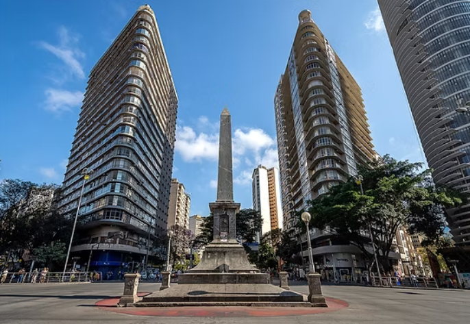
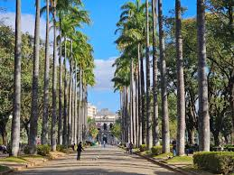
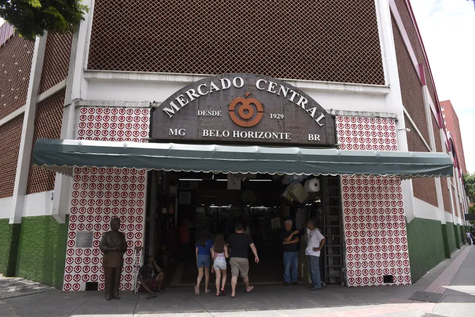
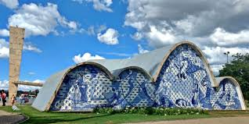

Descubra Belo Horizonte
Belo Horizonte é uma cidade cheia de cultura, gastronomia e paisagens marcantes. Neste espaço, reunimos alguns lugares especiais para viver experiências únicas e conhecer melhor a essência da capital mineira.
Explorar lugares
Experiências selecionadas

Um espaço marcante para passeios ao ar livre, visitas culturais e momentos de contemplação em um dos lugares mais tradicionais de BH.

Um lugar perfeito para conhecer sabores típicos, produtos regionais, tradições mineiras e a energia acolhedora da cidade.

Uma experiência que mistura paisagem, arquitetura e tranquilidade, reunindo alguns dos cenários mais conhecidos de Belo Horizonte.
Este site foi desenvolvido com o objetivo de apresentar pontos importantes de Belo Horizonte, valorizando cultura, gastronomia e experiências urbanas. A proposta foi construída com foco em responsividade e organização visual, utilizando o framework Bootstrap.
Dessa forma, a home-page se adapta a diferentes tamanhos de tela, mantendo uma navegação agradável tanto em computadores quanto em tablets e celulares.
img-fluid